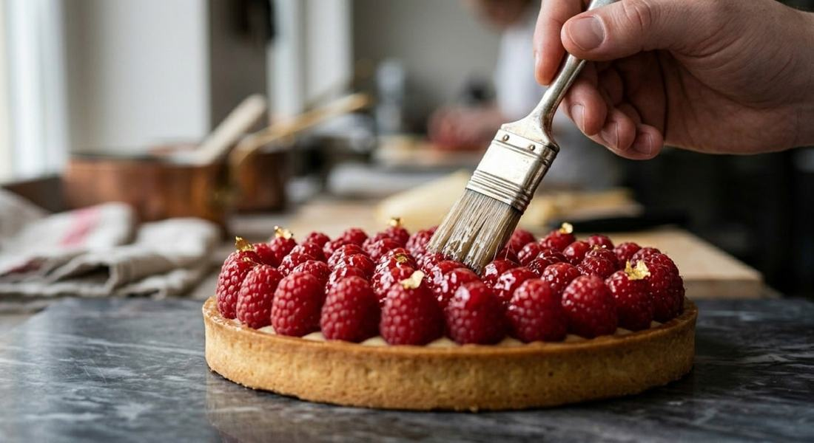

01 · Hikâye
Yirmi yıl, aynı köşe, yeni bir vitrin.
Uncalı Caddesi'nde ilk ekmeği çıkardığımızda mahalle daha yeni kuruluyordu. Bugün sabah altıda kapıyı açtığımızda ilk gelen yine komşularımız. Dükkânı baştan yeniledik, vitrini genişlettik; ama ekmek aynı ekmek, börek aynı el.
Kişiye özel pastalarımızı artık bu sayfadan seçip fiyatını görebilir, siparişi WhatsApp'tan ustamıza doğrudan bırakabilirsiniz.
Fırın saati
Hangi ürün ne zaman fırından çıkıyor? Çizgi şu anı gösterir; kırmızı işaretler son 45 dakikada çıkanlar. Siyahlar bugün çıkmış, gri olanlar daha çıkacak.
"Bu sabah mı yapıldı?" diye sormanıza gerek kalmasın.
Pasta kitabı
Doğum günü, nişan, söz, çocuk partisi. Kaydırın, beğendiğinizi seçin. Fiyatlar 6–8 kişilik içindir; aşağıdaki hesaplayıcı kişi sayısına göre boyu kendisi önerir.
Pasta hesaplayıcı
Kaç kişi geliyor?
Kaydırın; boyu ve fiyatı söyleyelim.
Örnek fiyat · kesin fiyat sipariş onayında
Okur mektubu
Bize yazın; iyi de olsa kötü de olsa okuyoruz.
Karekodu okutun, Google'da Hanzade'yi değerlendirin. Herkese aynı bağlantı açılır; yorumların hepsine ustamızın ya da Hüseyin Bey'in adıyla cevap veriyoruz. Bir şeye kırıldıysanız önce bize söyleyin, aynı gün düzeltelim.
Kasada · masalarda · paket poşetinde
Ziyaret
Molla Yusuf Mh. Uncalı Cad.
Sidney Apt. No:2/A
Konyaaltı / Antalya
Telefon (0242) 227 35 25 · Konyaaltı içi evlere servis · Gel-al siparişte %15 indirim.
360° · Gelmeden önce caddeyi gezin
Görüntü: Google Street View